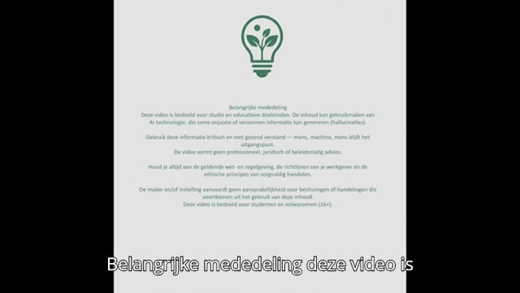

Wat werkt nu écht in de les én in je dagelijkse werk? Hier deel ik mijn ontdekkingen. Korte artikelen en video's met voorbeelden die je direct kunt proberen, zónder dat het je uren voorbereiding kost.
💡 Zoek je meer structuur? Bekijk mijn Gereedschapskist met gratis checklists en templates.
Praktische artikelen over AI in het onderwijs zijn in ontwikkeling. Blijf deze pagina in de gaten houden!

Eduvlog: NotebookLM Educast
Een praktische introductie over het gebruik van NotebookLM voor educatieve doeleinden.
🎯 Voor wie: docenten en teamcoaches
📦 Wat je leert: NotebookLM effectief inzetten
Theoretische lesstof en lesgerelateerde video's
Op mijn YouTube-kanaal deel ik lesgerelateerde video's, uitleg over theoretische lesstof en educatieve content. Abonneer je om op de hoogte te blijven van nieuwe uploads!
ℹ️ Belangrijk: Alle content op deze pagina is bedoeld voor educatieve en inspiratiedoeleinden.
De informatie vormt geen professioneel advies. Je blijft zelf verantwoordelijk voor beslissingen en dient je te houden aan de regels van je organisatie.
Lees onze algemene voorwaarden en privacyverklaring voor meer informatie.